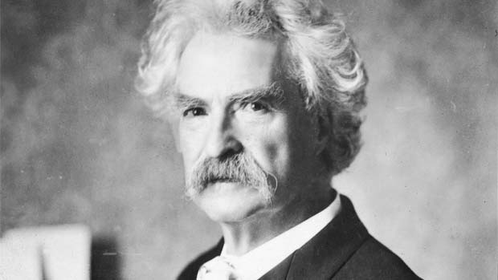

Charles Macdonald
Persona
chalres is 40 year old aspiring writer who is trying to gain some traction and promote himself as a great writer
He is attempting to get as many claps as possible and get his writings as much exposure as possible.
He really wants to become a well known author and he believes he can accomplish this by utilizing this website
to have many people see and read his page as possible
Charles is a laptop user that is constantly on the move to try and gain inspiration.
His is a medium user that is basically looking for validation for his works and is a "clap" hound

Use Case:Author Joins Medium
Overview:Author Joins Medium in order to blog his stories for exposure
Acotrs:author,Medium
- user goes to Medium site and clicks new account
- Medium ask for user personal information or asks for social media verification
- User clicks link to facebook profile
- system pulls facebook info and prefills forms
- user is now able to make post and comment on content
entities/Attributes
- Author
- authorname/primary key
- authorpic
- authorbio
- Article
- articletitle/primary key
- articlecontent
- articledatetime
- comment
- userid/primarykey
- datetime
- content